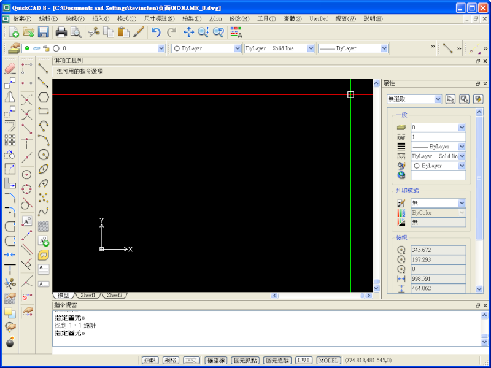

QuickCAD是我出社會工作第一個學的軟體，現在看到覺得真的很熟悉，現在他們也持續更新版本中~
以下為全新推出的 QuickCAD 8 ，在這跟大家分享一下這個訊息~

隨心所欲地工作
QuickCAD產品包含了350個以上具2D和3D的CAD功能。我們的產品特色標榜著簡單、好用、易上手的系統架構和客製化、個人化的使用者介面，要讓使用者在絕大部分（90%以上）的使用情境下，對我們的產品功能感到相當滿意。
行動自如
QuickCAD CE 是世界第一支適用於行動/無線Windows CE/XP計算作業的全功能CAD線，而QuickCAD是QuickCAD CE最佳的桌上型CAD夥伴。
獨特的相容技術
QuickCAD與Autodesk的AutoCAD相容的程度極高，不管是圖檔、指令、客製化功能、還是編程介面，只要是AutoCAD 2007或更早的版本，皆有高度的相容性。支援DWG 2009和DXF 2009的檔案格式，也有雙向轉換的保留圖檔元素功能。當讀取含有尚未支援的圖元物件時，使用者可以選擇保留該物件，在編輯完後回存時，這些物件都會被保留。
價值驚人
QuickCAD為2D和3D的設計、圖檔工作，提供了絕佳的工具和解決方案，我們的QuickCAD產品幾乎可以應付所有複雜的設計和繪圖工作。
客製化程式開發的開放性
視覺桌面和選單編輯者（Menu Editor；DME2）的功能，讓即使是毫無編程經驗或技巧的使用者，也可以輕易地修正指令對話，並由下拉選單和工具欄來執行想要的功能。
系統擴展和自訂應用程式開發
QuickCAD能以Lisp, Visual C++, 或Delphi等編程語言來開發。QuickCAD的應用程式介面（API）讓使用者能快速地擴展系統功能和建立應用程式，以滿足客戶的需求、提高企業的生產力。
價格低廉
我們提供完整、強大、且絕不遜於產業領導品牌AutoCAD的功能，但給予消費者更優惠的價格。